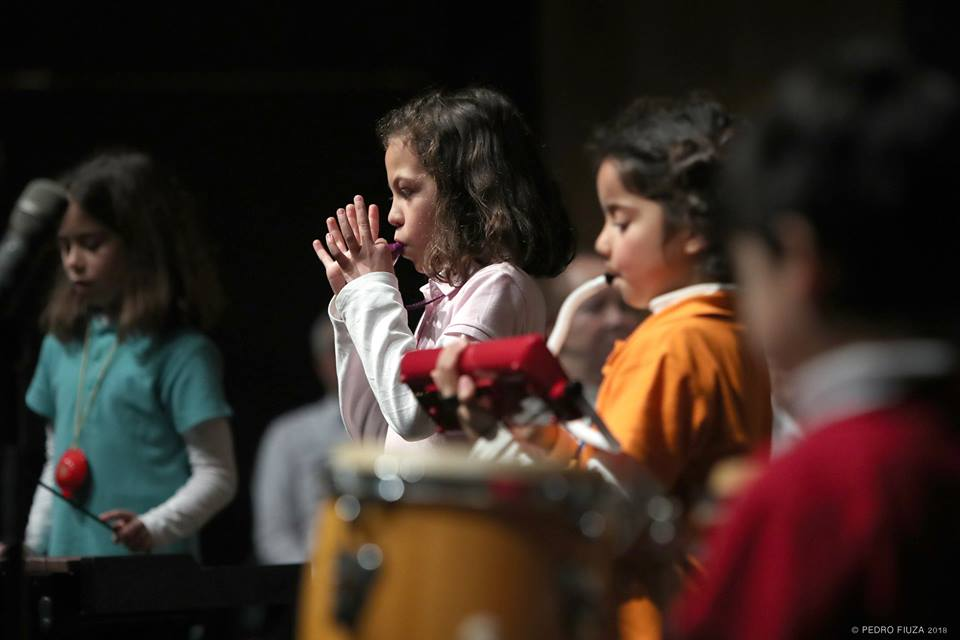
4–9/10
+
Vox Pueri
A primeira aventura coral.
Segunda · 17h–17h50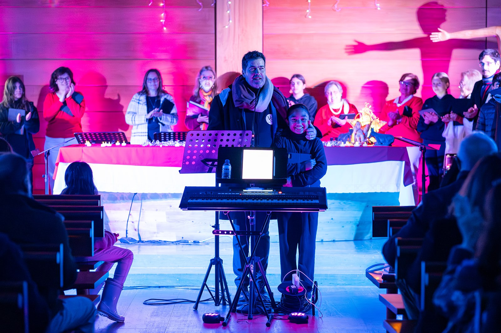
Cascais · Desde 1996
Entre. Escute. Encontre a sua.
A nossa razão
Crianças, jovens, adultos, famílias, maestros e públicos. Há trinta anos que criamos ligações através da voz.
Ainda não sabe qual é o grupo certo? Nós ajudamos a encontrar.
Fazer casting online →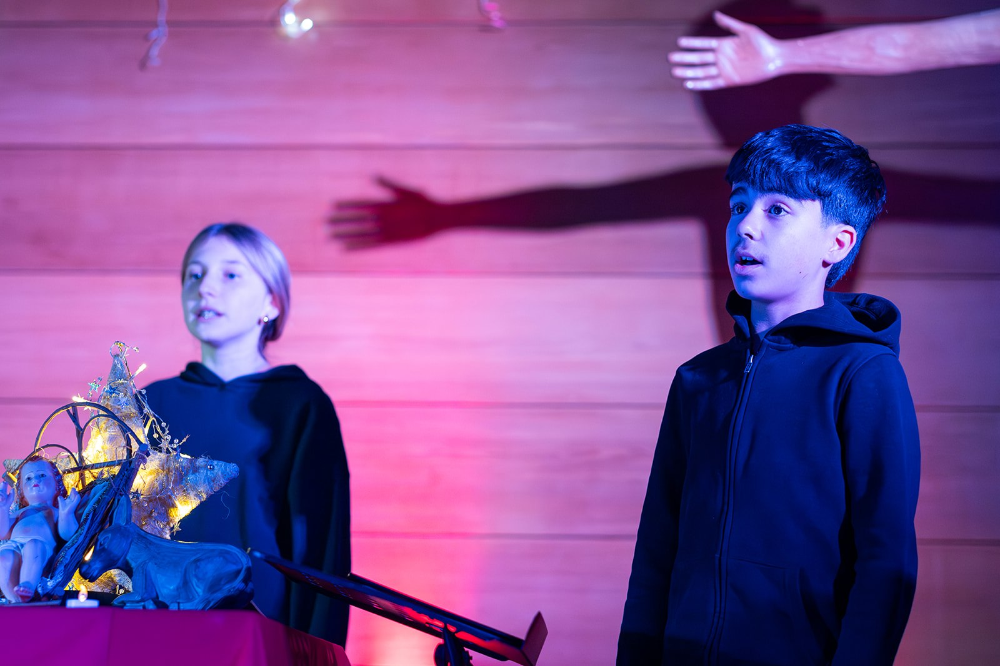
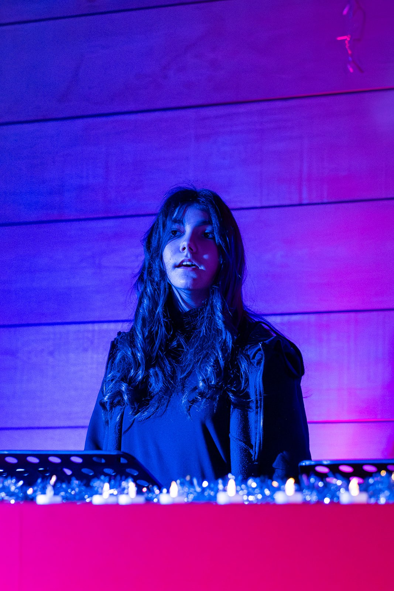
"Primeiro
escutamos.
Depois,
o mundo muda.
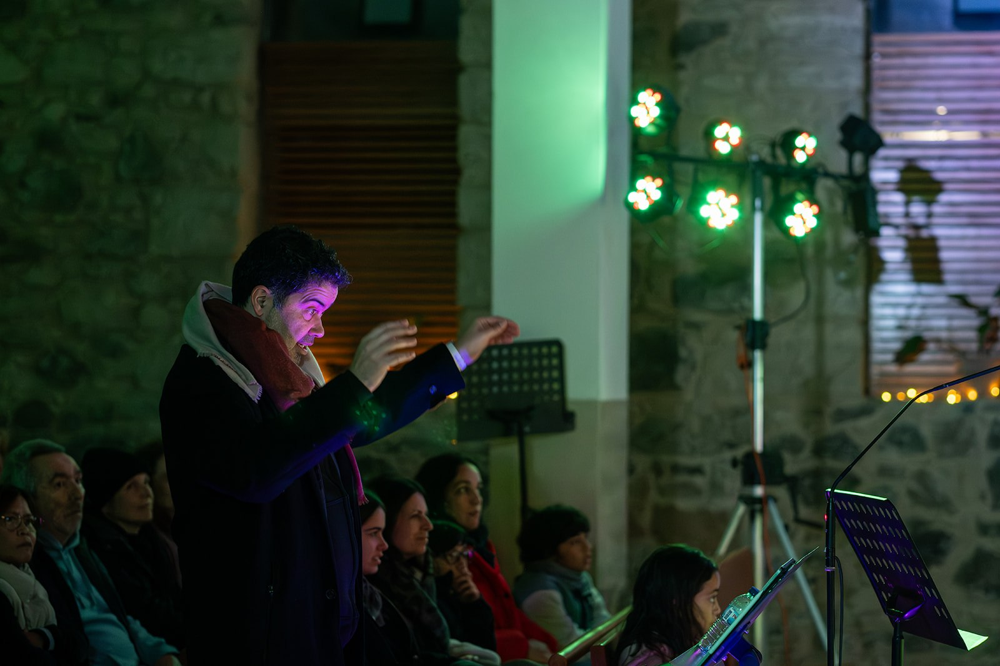
Encontre a sua voz
Escolha uma fase da vida ou siga a curiosidade.

A primeira aventura coral.
Segunda · 17h–17h50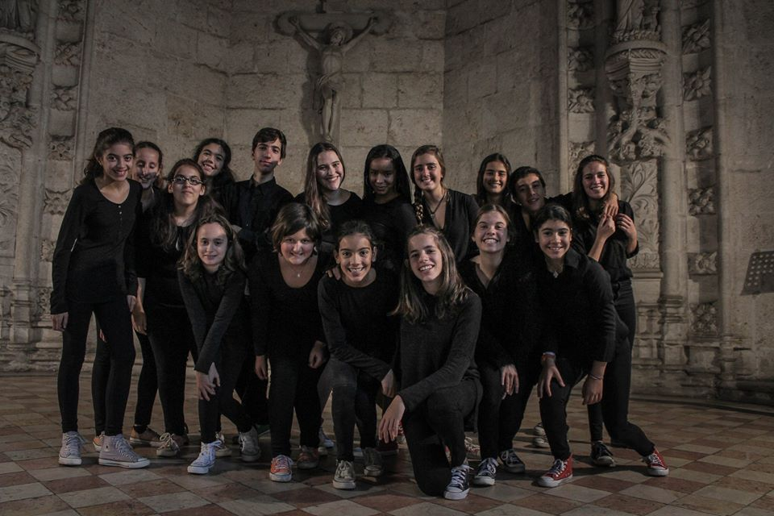
Identidade, palco e mundo.
Segunda · 18h–19h15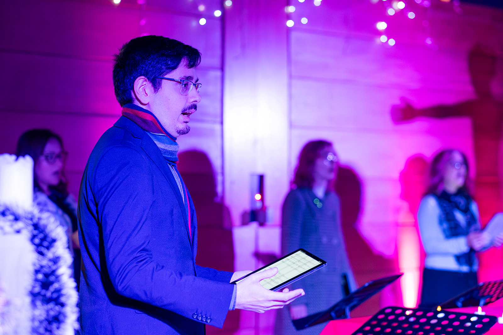
Respirar. Reencontrar. Transformar.
Segunda · 20h15–21h30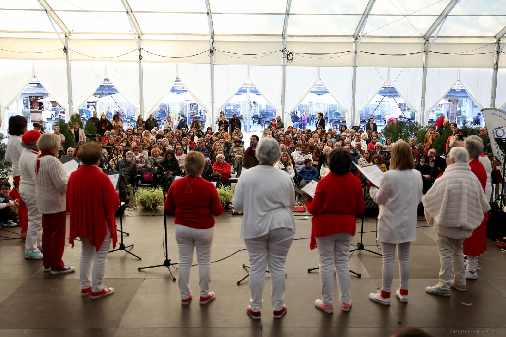
Coro adulto. Voz, repertório e comunidade.
Segunda · 12h–13h15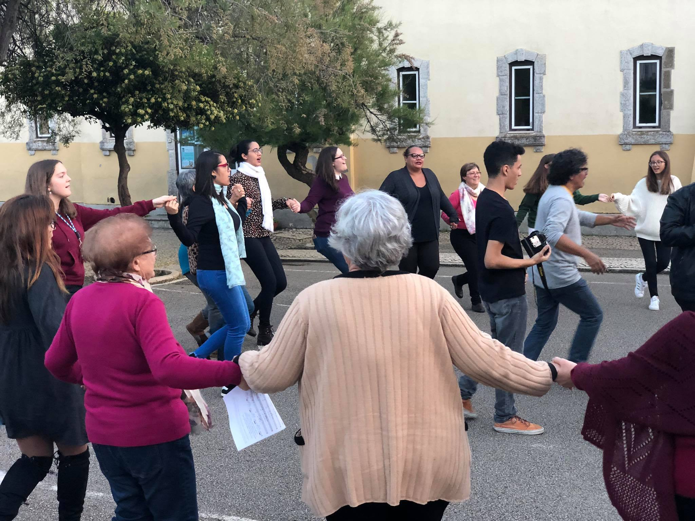
Cantar em grupo, criar ligações e fazer coro.
Da comunidade ao repertório profissional.
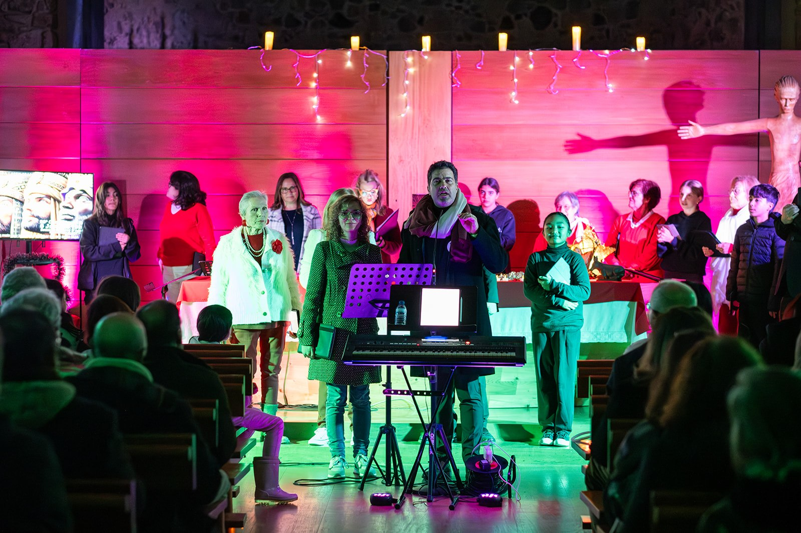
De Cascais para o mundo
Lisboa. Porto. Monopoli. Dakar. Londres. Cada encontro transforma o repertório numa experiência humana.
Eventos VoxLaci
Festivais, concertos, encontros internacionais e experiências criadas pela comunidade VoxLaci.
Gostaria de viver estes eventos por dentro?
Candidatar-me à comunidade →voX±Pop · International
Três dias de música, pertença e descoberta. Participe com o seu coro, com amigos ou individualmente.
Ramos · Palm Sunday Festival
Maestros convidados, masterclasses, ensaios intensivos e concertos unem participantes de diferentes países na semana que antecede a Páscoa.
Explorar as 19 edições e participar ↗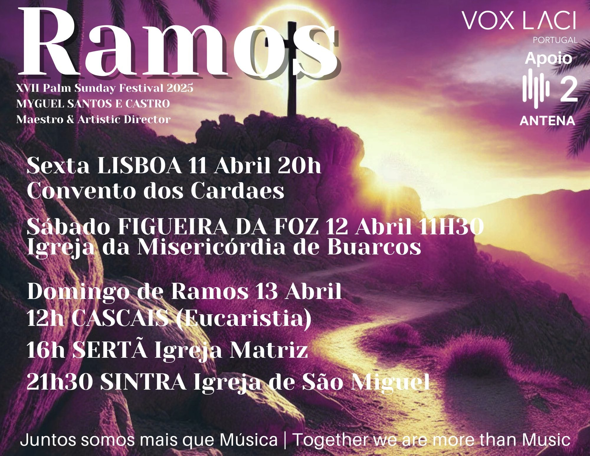
RAMOSMuito além do palco
Levar prática coral, escuta e criação a novas gerações.
+ 02Música como encontro, inclusão e cuidado.
+ 03Partilha, fraternidade e comunidade através da voz.
+ 04Bolsa 17 e oportunidades que reconhecem dedicação.
+ 05Momentos inesperados que aproximam pessoas através da música.
+ 06Reconhecer o compromisso, a evolução e o exemplo.
+A sua voz também pode criar impacto.
Começar o meu casting →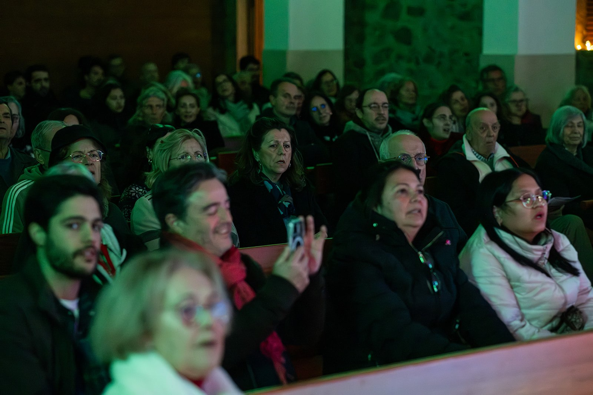
Crie connosco
Casamentos, cerimónias, eventos privados, empresas, team building, som, luz e produção musical.
Pedir uma propostaServiços
Maestro · Fundador · Diretor Artístico
Uma vida dedicada a criar comunidades através da música, da direção coral e de projetos que ligam pessoas, culturas e gerações.
Conhecer a direção artística →Experiência interativa
Três experiências simples: veja o desenho da sua fala, descubra a zona confortável do seu canto e tente acompanhar uma montanha melódica com a voz.
É apenas uma experiência lúdica, não uma classificação vocal. Em crianças, a voz deve ser sempre acompanhada por um professor.
—
Etapa 1: diga o seu nome e uma frase durante quatro segundos. Vamos desenhar a energia da sua fala.
Casting e inscrição online
Não precisa de saber qual é o seu tipo de voz nem qual é o grupo certo. Preencha o casting; a equipa VoxLaci ajudará a encontrar o caminho mais adequado.
Pagamentos 2026
Julho e agosto não são pagos. Jóia anual de 30€. Transferência até ao dia 1 de cada mês.
Equivalente a 39€/mês durante 10 meses. Pode ser dividido em duas prestações sem penalização.
Desconto familiar de 10% a partir do segundo membro até aos 18 anos. Descontos de antiguidade: 10 temporadas, 15€; 15 temporadas, 20€; 20 temporadas, 25€. Podem existir outras condições acumuláveis, com mínimo anual aplicável.
MB Way: 938 407 985
IBAN: PT50 0036 0196 9910 0035 3991 7
BIC/SWIFT: MPIOPTPL
Banco: Montepio Geral
Conta: 196.10.003539-9
NIB: 0036.0196.99100035399.17
PayPal: info@voxlaci.com
Revolut: confirmar com VoxLaci
A sua voz começa aqui
Conheça os ensembles, projetos e formas de participar na comunidade VoxLaci.
A VoxLaci está viva
Acompanhe as publicações mais recentes, receba novidades por email ou peça acesso ao grupo WhatsApp.